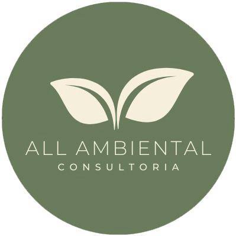
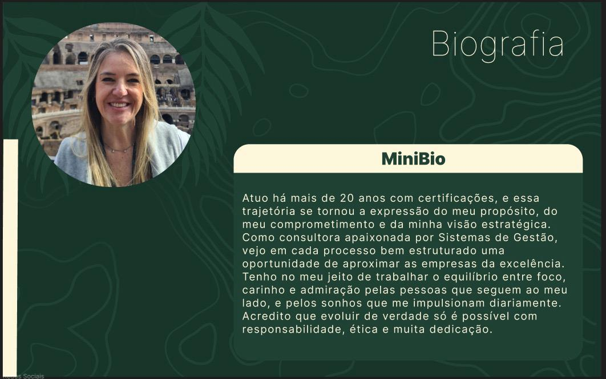

01
Consultoria
Diagnóstico estratégico e soluções sob medida para fortalecer a gestão, reduzir riscos e apoiar decisões mais seguras.

ALL AMBIENTALCONSULTORIAEstratégia, processos e resultados
Apoiamos empresas a transformar desafios complexos em processos eficientes, seguros e sustentáveis.
O que fazemos
Combinamos visão estratégica, conhecimento técnico e proximidade para tornar a excelência parte da rotina — não apenas uma meta.
Diagnóstico estratégico e soluções sob medida para fortalecer a gestão, reduzir riscos e apoiar decisões mais seguras.
Avaliação criteriosa de processos e requisitos para identificar oportunidades, antecipar desvios e preparar sua empresa.
Mapeamento, padronização e melhoria contínua para transformar rotinas em processos claros, eficientes e mensuráveis.
Nosso método
Uma jornada próxima, objetiva e construída para a realidade da sua empresa.
Entendemos o cenário, as necessidades e os objetivos do negócio.
Priorizamos oportunidades e construímos um caminho viável e claro.
Acompanhamos a execução e engajamos as pessoas envolvidas.
Medimos resultados e sustentamos a melhoria ao longo do tempo.

Quem está por trás
Atuo há mais de 20 anos com certificações, e essa trajetória se tornou a expressão do meu propósito, do meu comprometimento e da minha visão estratégica. Como consultora apaixonada por Sistemas de Gestão, vejo em cada processo bem estruturado uma oportunidade de aproximar as empresas da excelência.
Tenho no meu jeito de trabalhar o equilíbrio entre foco, carinho e admiração pelas pessoas que seguem ao meu lado — e pelos sonhos que me impulsionam diariamente. Acredito que evoluir de verdade só é possível com responsabilidade, ética e muita dedicação.
Vamos conversar?
Conte o desafio da sua empresa e descubra como podemos construir uma solução objetiva, segura e personalizada.
Iniciar conversa pelo WhatsApp ↗+55 11 94737-8715